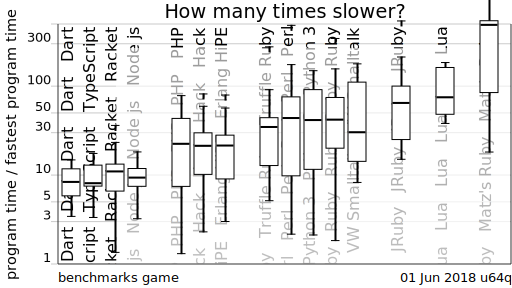
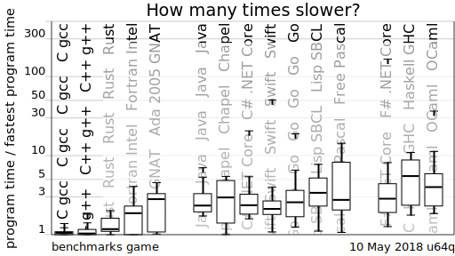

How many times slower, the fastest benchmark programs for selected programming language implementations are, compared to the fastest written in any of the programming languages.

You can see that the order would be different if it was based on the median scores instead of the [pdf] geometric mean scores.

The boxes are broken into separate groups, at the minima of the kernel density estimate for the geometric mean scores.
Notice which boxes overlap completely. Notice which spread across too large a range of values for confidence.